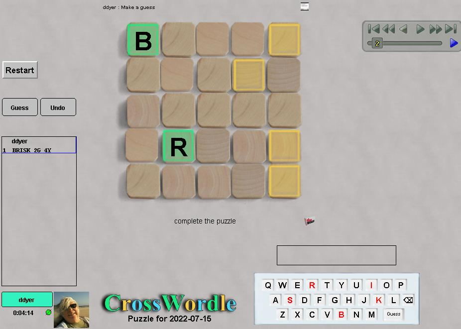

Crosswordle
Crosswords is a word puzzle in the family of Jotto and Wordle. Read a complete description of the puzzle here.
The basic idea is to use "Wordle" style feedback to complete a
crossword grid. All the words in the grid, and all probe words
used, are real words - but not necessarily completely common words.
Dictionary:
Crosswords uses a limited lexicon derived from the open source program Collins Zyzzyva,
which has roughly 280,000 words considered acceptable for scrabble.
Of those, roughly 6000 are 5-letter words, but of those only
about 2000 would be considered common.
Robots:
not yet.
|

|